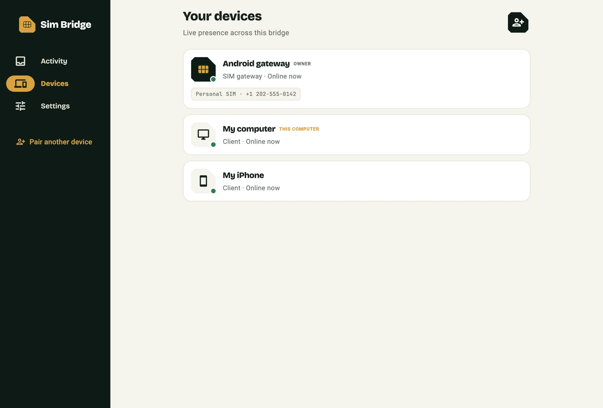
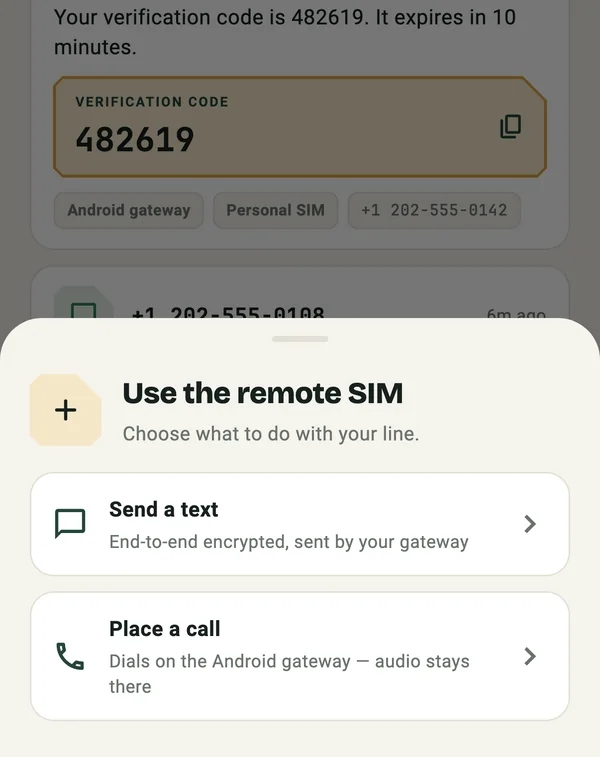

Read every SMS
Incoming messages appear on all paired devices within moments, decrypted only on the device itself.
Free and open source · MIT
Sim Bridge brings the messages and verification codes of your Android phone to your iPhone, Mac, Windows PC and Linux desktop. End-to-end encrypted, through a relay you run yourself.
Version · released
One Android phone with an active SIM is the gateway. Every other device joins it as a client.
Incoming messages appear on all paired devices within moments, decrypted only on the device itself.
Codes are detected and shown large. Copied codes are marked sensitive and cleared from the clipboard after three minutes.
Write an SMS on your computer or iPhone; the gateway sends it on the SIM you choose and reports the carrier result.
Dial or hang up on the gateway phone from another device. Call audio stays on the Android phone.
Pick the line for every message or call. Each SIM is labelled with its name and number.
Scan a QR code with a phone, or type the relay address and recovery code on a computer.


The relay in the middle cannot read what it forwards.
There is no Sim Bridge account and no central server. Choose where your relay runs.
No server to maintain. The relay lives in memory in a single Durable Object and fits the free plan for a personal bridge.
cd server && npm ci
npx wrangler secret put SIM_BRIDGE_ACCESS_KEY
npm run deploy:workerRun it with Node.js on a home server or in Docker behind a tunnel. On your LAN, apps find it automatically.
cd server && npm ci
SIM_BRIDGE_ACCESS_KEY=… npm startDesktop packages are not yet code-signed by a publisher, so your system may ask you to confirm the first launch. A Sim Bridge gateway needs an Android phone with an active SIM. Sim Bridge is not an emergency calling service.